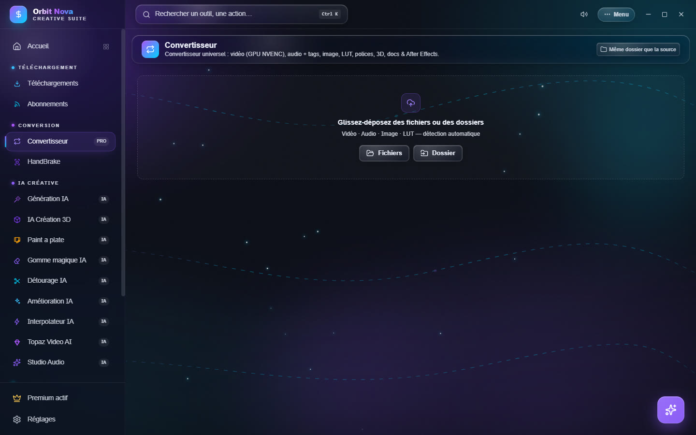
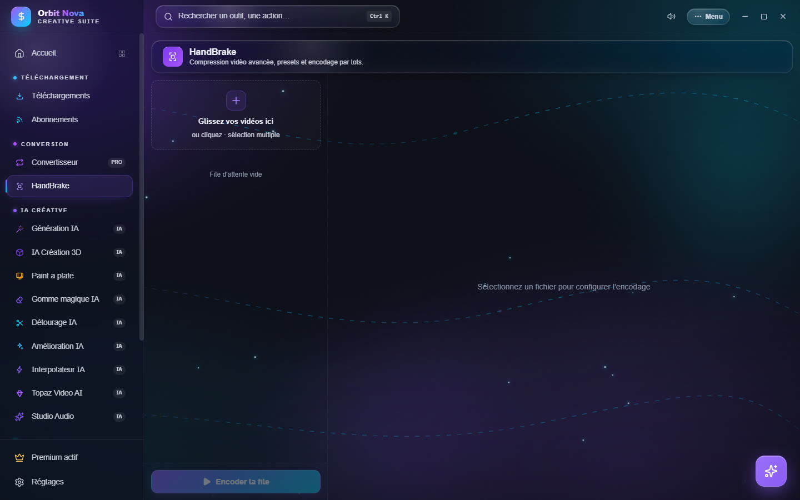

Conversion
Le Convertisseur
Le Convertisseur transforme presque tout type de fichier. Glissez des fichiers ou des dossiers entiers (Orbit parcourt les sous-dossiers) dans la zone, ou cliquez Fichiers / Dossier. Orbit reconnaît chaque fichier et propose les formats de sortie possibles.


| Catégorie | Entrée | Sortie |
|---|---|---|
| Vidéo | MP4, MKV, MOV, AVI, WEBM… | MP4, MOV, ProRes, MKV, WEBM, AVI, GIF, ou extraction audio (MP3, WAV, FLAC, M4A) |
| Audio | MP3, WAV, FLAC, M4A, OGG… | WAV, MP3, FLAC, AAC, OGG, OPUS, M4A, avec modification des tags (titre, artiste, album, année, pochette) |
| Image | JPG, PNG, WEBP, HEIC, TIFF, BMP… | PNG, JPG, WEBP, AVIF, TIFF, BMP |
| LUT | .cube, .3dl |
.cube ↔ .3dl |
| Polices | TTF, OTF | TTF, WOFF, WOFF2 |
| 3D | FBX, OBJ, GLB, GLTF, STL, PLY, DAE… | GLB, OBJ, STL, PLY |
| Documents | DOCX, XLSX, Markdown | PDF, HTML |
| After Effects | .ffx, .aep |
analyse (effets et plugins requis) et changement de version d'After Effects |
Les réglages vidéo
Sélectionnez un fichier vidéo pour voir ses réglages :
- Encodeur : Auto (GPU si dispo), GPU NVIDIA (NVENC) (bien plus rapide) ou Processeur (CPU) (fichiers un peu plus légers). Si le GPU échoue, Orbit recommence tout seul sur le processeur.
- Codec : H.264 (compatible partout), H.265, AV1, ou Copie rapide (aucun réencodage, instantané, quand le format de sortie le permet).
- Qualité : haute, équilibrée ou légère, et une hauteur maximale (1080p, 720p…).
- Poids cible : pour tenir sous une limite d'envoi : Discord (10 Mo), WhatsApp (16 Mo), E-mail (25 Mo), Discord Nitro (50 Mo), Nitro+ (500 Mo) ou une taille personnalisée.
Toutes les pistes audio et les sous-titres sont conservés quand le conteneur les accepte. Si une piste ne peut pas l'être (par exemple des sous-titres image dans un MP4), la ligne l'indique en orange.
La file d'attente
Glissez une ligne par sa poignée pour changer l'ordre : la file traite toujours la première ligne en attente, même si vous la réorganisez pendant la conversion. Avec la carte graphique, deux vidéos sont converties en même temps.
After Effects
Pour un préréglage .ffx ou un projet .aep, Orbit liste les effets utilisés et les plugins tiers
nécessaires. Il peut aussi changer la version d'After Effects d'un fichier pour l'ouvrir dans une version plus
ancienne ou plus récente, et, si After Effects est installé sur votre PC, l'utiliser pour enregistrer un projet
dans une autre version ou appliquer un préréglage à une composition.
HandBrake
L'onglet HandBrake pilote le célèbre encodeur pour les compressions avancées. La première fois, cliquez Installer HandBrake (téléchargement automatique).


- Glissez vos vidéos dans la zone (plusieurs à la fois).
- Sélectionnez un fichier pour régler son encodage, ou réglez une fois et cliquez Réglages appliqués à toute la file.
- Cliquez Encoder la file.
Les réglages, par section :
- Préréglage & Format : un préréglage HandBrake officiel comme base, ou Aucun (réglages manuels) ; conteneur ; Optimisé web (lecture progressive).
- Vidéo : encodeur, vitesse d'encodage, Qualité constante (RF) (plus bas = meilleur) ou Débit moyen avec 2 passes ; résolution maximale ; images par seconde ; rotation. La taille estimée s'affiche.
- Filtres : débruitage (NLMeans), netteté (Lapsharp), désentrelacement, deblock, noir et blanc.
- Audio & Sortie : Copier (sans réencodage) ou débit audio ; Conserver les sous-titres ; dossier de sortie.
Enregistrez vos réglages comme préréglage personnel pour les retrouver plus tard.